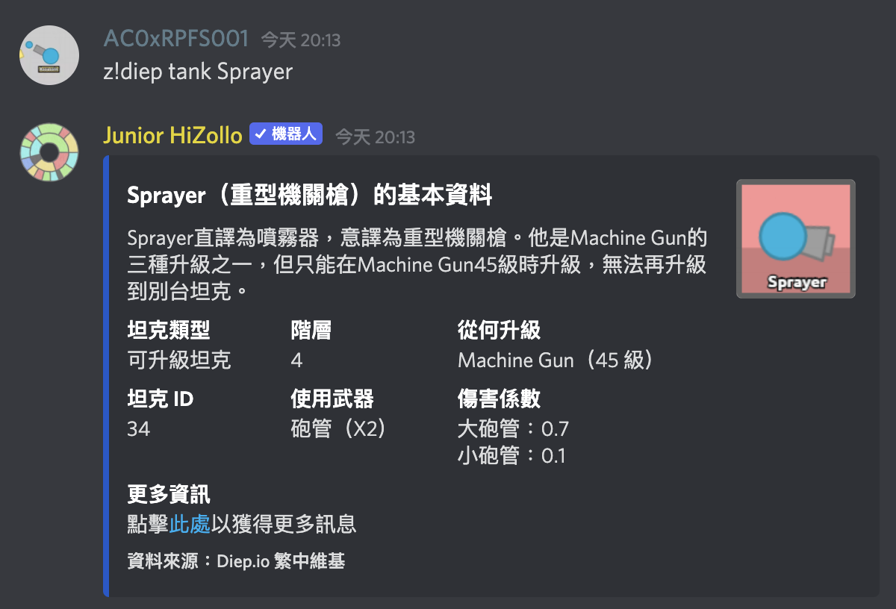

z!diep 就是 diep 指令群，執行這個指令時除了要先輸入前綴 z! 以外，還要額外加群組名稱，變成 z!diep。如果你直接把這串文字當成指令送出，就能看到這個群組指令的列表：
你也可以在指令列表中，「指令群」分類的介紹中點擊連結查看群組指令列表，例如 diep 群組指令列表就可以在這個頁面看到。
z!diep fact 就可以了。z!diep tank，然後在這後面以空格區分加上參數就好了，使用範例如下：

這樣就成功執行帶有參數的群組指令了！
| 分類 | 內容 |
|---|---|
| 基本 | 邀請 HiZollo ・ 指令清單及一般指令・ 指令用法的查詢 |
| 進階 | 指令群・ 指令別名・ 群組指令捷徑 |
| 特殊 |
隱藏指令・
z!calc 的進階用法・
支援伺服器
|
| HiZollo 聯絡網 | HiZollo Guild Drop |